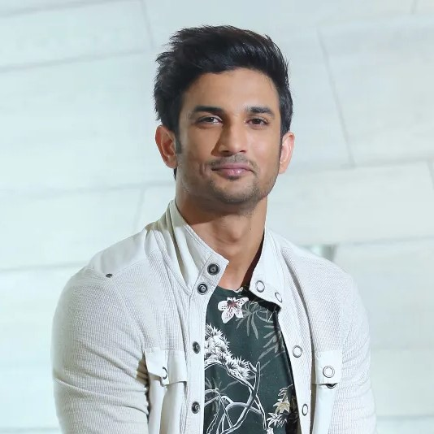

|  |
Sushant Singh Rajput (21 January 1986 – 14 June 2020) was an Indian actor known for his work in Hindi cinema. He starred in a number of commercially successful Hindi films such as M.S. Dhoni: The Untold Story (2016), Kedarnath (2018) and Chhichhore (2019). Due to his contribution to the film industry, he received a Screen Award and was nominated for the Filmfare Awards on three occasions. He appeared on Forbes India's Celebrity 100 list twice since 2017.
Rajput began his acting career after dropping out of his engineering course at the Delhi College of Engineering and entering the theatre industry in Mumbai. He moved on to feature in Hindi television serials, his debut show was the romantic drama Kis Desh Mein Hai Meraa Dil (2008), followed by the lead role in the soap opera Pavitra Rishta (2009–2011). He made his film debut with the film adaptation Kai Po Che! (2013) which became a critical and commercial success. He followed up with his starring roles as a tourist guide in the romantic comedy Shuddh Desi Romance (2013) and the titular detective in the action thriller Detective Byomkesh Bakshy! (2015).
Rajput also starred in a number of other films such as the reincarnation drama Raabta (2017), the historical drama Sonchiriya (2019) and the action thriller Drive (2019). His highest-grossing releases came with a supporting role in the satire PK (2014), and from the titular role in the sports biopic of Mahendra Singh Dhoni. For his performance in the latter, he received his first nomination for the Filmfare Award for Best Actor and became the winning nomination at the Indian Film Festival of Melbourne. Apart from acting, he was the founder of a nonprofit organisation and has been credited as the co-founder of a technological startup.
Rajput died by suicide at his home in Bandra, Mumbai in June 2020, aged 34. His last film, Dil Bechara (2020), was released posthumously on the streaming platform Hotstar.